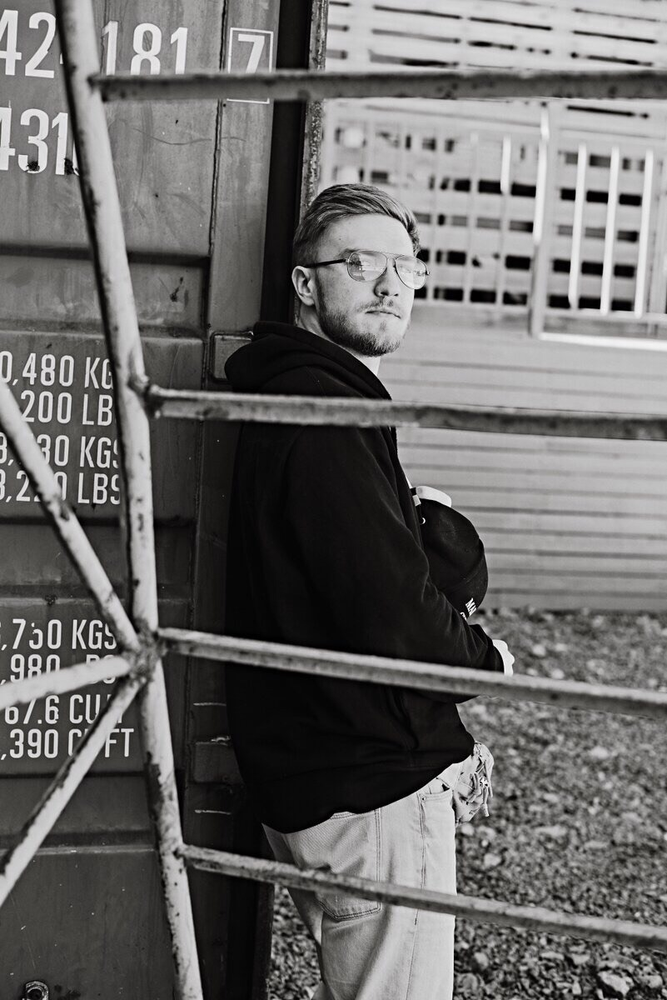

Творчество Макара существует на пересечении повседневного и монументального. Его практика — это последовательное исследование присутствия: в пространстве, во времени, в жизнях тех, кто оказался рядом.
Настоящая биеннале — первая масштабная ретроспектива, объединяющая работы ключевого периода и представляющая вклад соавторов, без которых этот корпус произведений не мог бы существовать.
Makar's practice exists at the intersection of the mundane and the monumental. His work is a sustained inquiry into presence — in space, in time, in the lives of those who found themselves nearby. This biennale is the first major retrospective, bringing together works from a pivotal period and honoring the collaborators without whom this body of work could not exist.

Макар Евдокимов (р. 1998, Санкт-Петербург) — мультидисциплинарный автор, работающий на стыке вокального перформанса, хореографии и site-specific интервенций. В детстве одновременно занимался танцами и музыкой, осваивая фортепиано и скрипку — фундамент, на котором впоследствии была выстроена его полимедийная практика.
Получив образование в области финансов в Высшей Школе Менеджмента СПбГУ, Евдокимов был удостоен премии «Человек искусства» — признание, формально закрепившее то, что его окружение наблюдало годами. Продолжил обучение в магистратуре Университета Гумбольдта (Берлин), где погрузился в изучение местной сцены искусства. Работает в тысячах различных техник. Живёт и работает в Нойкёльне, Берлин.
Makar Evdokimov (b. 1998, St. Petersburg) is a multidisciplinary artist working at the intersection of vocal performance, choreography, and site-specific interventions. From childhood, he simultaneously studied dance and music, mastering piano and violin — the foundation upon which his polymedia practice was subsequently built.
Having studied finance at the Graduate School of Management, St. Petersburg State University, Evdokimov was awarded the "Person of Art" prize — formal recognition of what his circle had observed for years. He continued at Humboldt University (Berlin), immersing himself in the local art scene. Works across thousands of techniques. Based in Neukölln, Berlin.